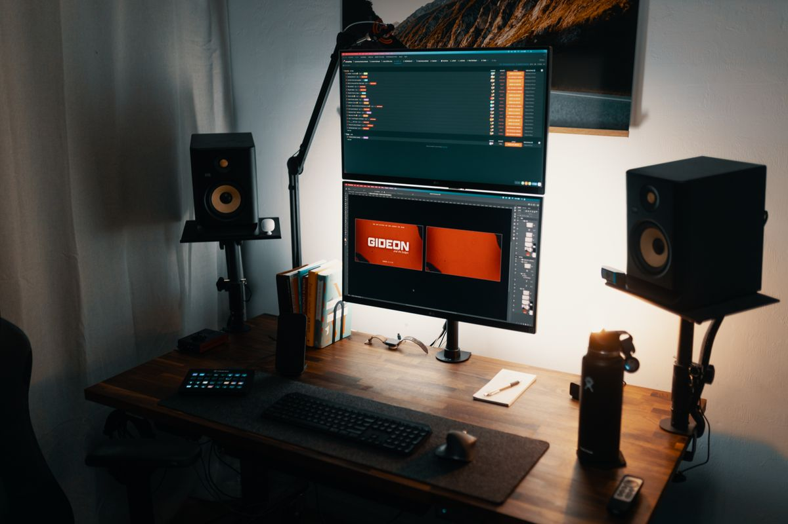

แขนจับจอ Monitor Arm อัปเกรดโต๊ะทำงานให้โล่งและปรับจอได้อิสระทุกทิศทาง 2026
แขนจับจอ Monitor Arm ช่วยคืนพื้นที่โต๊ะและปรับจอได้อิสระทุกทิศทาง รวมประเภทแขนจับจอและเกณฑ์การเลือกซื้อ ทั้งแบบเดี่ยว แบบคู่ และแบบยึดผนัง ซื้อผ่าน Shopee
อัปเดต กรกฎาคม 2026
คนที่ใช้จอมอนิเตอร์ตั้งบนขาตั้งเดิมที่ติดมากับตัวจอ มักเจอปัญหาคล้ายกัน คือฐานจอกินพื้นที่โต๊ะเยอะ ปรับความสูงหรือมุมได้จำกัด และถ้าอยากใช้สองจอพร้อมกัน พื้นที่โต๊ะที่เหลือให้วางของอื่นก็ยิ่งน้อยลงไปอีก โดยเฉพาะโต๊ะทำงานขนาดเล็กที่ต้องบริหารพื้นที่ทุกตารางเซนติเมตร
แขนจับจอ หรือ Monitor Arm คืออุปกรณ์ที่เข้ามาแก้ปัญหานี้โดยตรง ด้วยการยึดจอเข้ากับขอบโต๊ะหรือเจาะรูโต๊ะแทนการตั้งฐานแบบเดิม ทำให้พื้นโต๊ะด้านล่างจอโล่งขึ้นทันที และยังสามารถขยับจอขึ้นลง ซ้ายขวา หมุน หรือเอียงได้อย่างอิสระ ต่างจากขาตั้งจอทั่วไปที่มักปรับได้แค่ความสูงในบางรุ่นเท่านั้น บทความนี้จะพาไปดูว่า Monitor Arm เหมาะกับใคร และควรเลือกแบบไหนให้ตรงกับการใช้งาน
ข้อดีของแขนจับจอที่ขาตั้งทั่วไปทำไม่ได้

คืนพื้นที่โต๊ะทำงาน เมื่อฐานจอไม่ได้วางอยู่บนโต๊ะแล้ว พื้นที่ตรงนั้นสามารถใช้วางคีย์บอร์ด เอกสาร หรือแก้วกาแฟได้เพิ่มขึ้นอย่างเห็นได้ชัด โดยเฉพาะกับโต๊ะขนาดเล็กหรือโต๊ะปรับระดับที่พื้นที่ใช้งานมีจำกัดอยู่แล้ว
ปรับตำแหน่งจอได้ตรงระดับสายตาแม่นยำกว่า ด้วยกลไกข้อต่อหลายจุดและระบบสปริงถ่วงน้ำหนัก (Gas Spring) ทำให้ขยับจอขึ้นลงได้ลื่นด้วยแรงมือเพียงเล็กน้อย ต่างจากขาตั้งบางรุ่นที่ต้องคลายน็อตแล้วขันใหม่ทุกครั้งที่ปรับ
รองรับหลายจอในพื้นที่เดียวกัน สำหรับคนที่ทำงานกับสองจอหรือมากกว่า แขนจับจอแบบมัลติช่วยจัดวางจอให้เรียงชิดกันอย่างเป็นระเบียบ ปรับมุมแต่ละจอแยกกันได้ตามการใช้งาน เช่น จอหลักตรงหน้า จออีกตัวเอียงไว้ดูข้อมูลอ้างอิง
เปลี่ยนท่าทำงานได้หลากหลาย บางรุ่นสามารถหมุนจอเป็นแนวตั้ง (Portrait Mode) เหมาะกับงานอ่านเอกสารยาวหรือเขียนโค้ด และบางรุ่นปรับระยะเข้าออกได้ไกลพอสำหรับคนที่สลับระหว่างนั่งกับยืนทำงาน
ประเภทของแขนจับจอที่ควรรู้จัก

แขนจับจอเดี่ยว (Single Monitor Arm)
เหมาะกับคนที่ใช้จอเดียวแต่ต้องการความยืดหยุ่นสูงในการปรับตำแหน่ง ราคาย่อมเยากว่าและติดตั้งง่าย เหมาะเป็นจุดเริ่มต้นสำหรับคนที่อยากลองเปลี่ยนจากขาตั้งเดิม แขนจับจอเดี่ยวปรับระดับได้ รุ่นแนะนำ

แขนจับจอคู่ (Dual Monitor Arm)
ออกแบบมาสำหรับใช้งานสองจอพร้อมกันบนฐานเดียว ช่วยให้จัดวางจอทั้งสองข้างสมมาตรและเป็นระเบียบ เหมาะกับสายงานที่ต้องเปิดหลายหน้าต่างพร้อมกัน เช่น งานกราฟิก งานเทรด หรืองานวิเคราะห์ข้อมูล แขนจับจอคู่สำหรับสองจอ รุ่นแนะนำ
แขนจับจอแบบยึดผนังหรือยึดเสา
เหมาะกับพื้นที่ทำงานที่ไม่มีขอบโต๊ะให้หนีบ หรือต้องการความมั่นคงสูงสุด มักพบในโต๊ะทำงานแบบ built-in หรือสตูดิโอที่ออกแบบพื้นที่มาโดยเฉพาะ
เกณฑ์การเลือกซื้อแขนจับจอ
น้ำหนักและขนาดจอที่รองรับ ควรตรวจสอบสเปกแขนว่ารองรับน้ำหนักจอของเราหรือไม่ โดยเฉพาะจอขนาดใหญ่กว่า 27 นิ้วหรือจอโค้งที่มักหนักกว่าจอทั่วไป การใช้แขนที่รับน้ำหนักไม่พอจะทำให้จอค่อย ๆ ลู่ลงเองเมื่อใช้ไปนาน ๆ
รูปแบบการยึดกับโต๊ะ มีทั้งแบบหนีบขอบโต๊ะ (Clamp) และแบบเจาะรูยึด (Grommet) ควรเลือกให้เหมาะกับโครงสร้างโต๊ะที่ใช้อยู่ เช่น โต๊ะกระจกอาจไม่เหมาะกับการเจาะรู
มาตรฐานรูยึดจอ VESA จอส่วนใหญ่ในปัจจุบันรองรับมาตรฐาน VESA 75x75 หรือ 100x100 มม. ควรตรวจสอบสเปกจอก่อนซื้อแขนเพื่อให้แน่ใจว่าติดตั้งได้พอดี
กลไกการเคลื่อนไหว แขนที่ใช้ Gas Spring จะขยับลื่นและนุ่มนวลกว่าระบบสปริงธรรมดา แต่ก็มีราคาสูงกว่า ควรเลือกตามความถี่ในการปรับตำแหน่งจอของตัวเอง
สรุป
แขนจับจอเป็นการลงทุนที่คุ้มค่าสำหรับคนที่อยากได้พื้นที่โต๊ะเพิ่มขึ้นและต้องการความยืดหยุ่นในการจัดตำแหน่งจอมากกว่าขาตั้งทั่วไป ไม่ว่าจะใช้จอเดียวหรือหลายจอ การเลือกแขนที่รองรับน้ำหนักและรูปแบบการยึดที่เหมาะกับโต๊ะจะช่วยให้ใช้งานได้อย่างมั่นคงและยาวนาน เปลี่ยนโต๊ะทำงานให้ดูเป็นระเบียบและทำงานได้สบายตากว่าเดิม
บทความนี้มีลิงก์ affiliate เมื่อคุณซื้อผ่านลิงก์ เราอาจได้รับค่าคอมมิชชั่นโดยที่คุณไม่ต้องจ่ายเพิ่ม